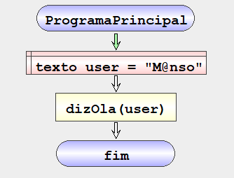
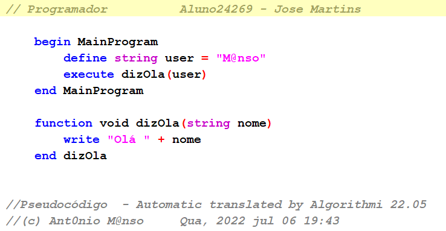
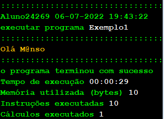
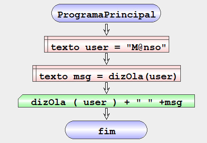
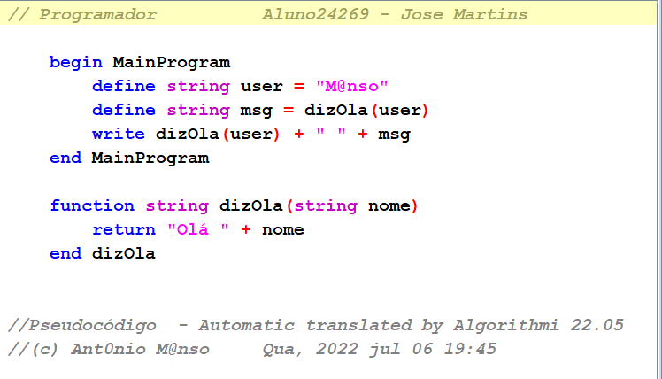
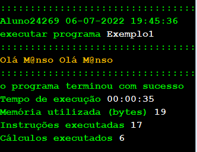

| GAL | |
|---|---|
| Flowchart | pseudocode |
|  |  |
| Result | |
|  | |
| Flowchart | GAL |
|---|---|
| return *expression* |
| GAL | |
|---|---|
| BEGIN MAIN_PROGRAM_NAME
EXECUTE dizOla ROUND_OPEN ROUND_CLOSE END MAIN_PROGRAM_NAME FUNCTION VOID dizOla ROUND_OPEN ROUND_CLOSE WRITE "Hello World" |
|
| Flowchart | pseudocode |
|  |  |
| Result | |
|  | |
| Flowchart | Gal |
|---|---|
| MEMORY
*define* DEFINE REAL ver SET 1.0 END |
| GAL | |
|---|---|
| MEMORY GLOBAL_MEMORY_NAME
DEFINE REAL ver SET 1.0 END GLOBAL_MEMORY_NAME BEGIN MAIN_PROGRAM_NAME DEFINE TEXT prog SET " Algorithmi " ITERATE INTEGER i FROM 1 TO 10 STEP 1 WRITE dizOla ROUND_OPEN i SUM prog ROUND_CLOSE END ITERATE END MAIN_PROGRAM_NAME FUNCTION TEXT dizOla ROUND_OPEN TEXT nome ROUND_CLOSE DEFINE TEXT msg SET "Olá " SUM nome RETURN msg SUM ver SUM "\n" END dizOlaO |
|
| Flowchart | pseudocode |
| Result | |